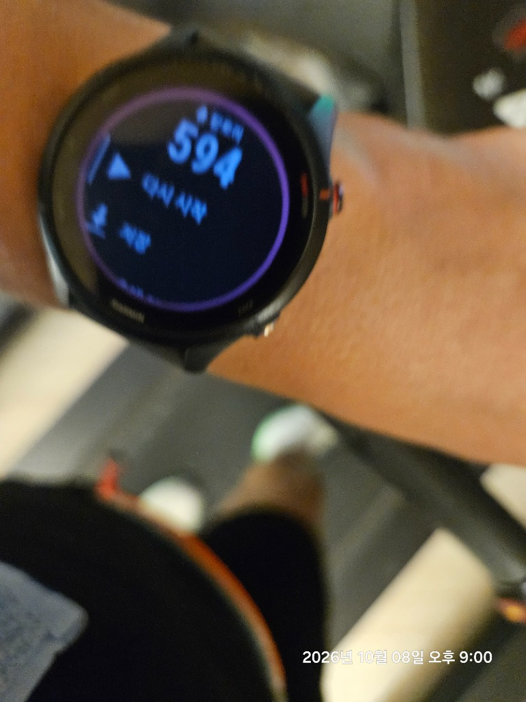

결론부터 말하면 러닝머신 계기판 숫자는 실제 쓴 에너지보다 약 15~25% 더 많이 표시됩니다. 기계 모니터는 내 심박수나 달리기 자세를 모른 채 단순히 '몸무게 × 거리' 공식만 쓰기 때문입니다. 실내에서 바람이 없어 생기는 차이와, 야외 달리기와 똑같은 운동 효과를 내는 '경사도 1% 맞추기'를 쉽게 정리합니다.

📸 실측 사진: 러닝머신 완주 계기판 화면: 10.02km를 52분에 달렸을 때 계기판에는 684kcal라고 나오지만, 실제로 몸에서 쓴 칼로리는 약 570kcal 정도로 약 16~17% 정도 더 높게 표시됩니다.
1. 러닝머신 계기판이 칼로리를 부풀리는 3가지 이유
러닝머신 제조사들은 운동한 보람을 더 크게 느끼도록 칼로리를 조금 넉넉하게 계산해 띄우는 경향이 있습니다.
⚠️ 러닝머신 칼로리가 부정확한 3가지 이유
- 숨만 쉬어도 쓰는 칼로리까지 합침: 가만히 있어도 1시간에 70~80kcal씩 기본으로 쓰이는 에너지가 운동 칼로리에 함께 더해져 나옵니다.
- 달리기 실력 차이를 모름: 오래 달린 사람은 불필요한 움직임이 적어 에너지를 아껴 쓰고 초보자는 더 많이 쓰지만, 기계는 똑같이 계산합니다.
- 손잡이를 잡는 경우: 힘들어서 손잡이를 잡고 뛰면 다리에 실리는 무게가 30% 이상 줄어드는데도, 기계는 속도와 시간만 보고 칼로리를 그대로 올립니다.
2. 러닝머신 vs 야외 달리기: 몸이 느끼는 2가지 큰 차이
똑같은 5분 페이스(시속 12km)로 달려도 실내 러닝머신이 야외 도로보다 훨씬 편하게 느껴지는 데는 이유가 있습니다.
야외에서는 몸이 앞바람을 뚫고 나가야 합니다. 시속 12~15km로 달릴 때는 공기를 밀어내는 데만 전체 힘의 최대 8~12%를 씁니다. 제자리에서 뛰는 러닝머신에는 이 바람 저항이 없습니다.
야외에서는 엉덩이와 뒷허벅지 힘으로 땅을 뒤로 차야 몸이 앞으로 나갑니다. 반면 러닝머신은 모터가 발밑 벨트를 뒤로 돌려주므로 발을 위로 들기만 해도 계속 달릴 수 있습니다.
3. 야외와 똑같은 운동 효과를 내는 '경사도 1% 법칙'
스포츠 과학 연구(Jones & Doust, 1996)에서는 실내 러닝머신과 야외 달리기의 차이를 맞추는 간단한 기준을 찾아냈습니다.
📐 경사도 1.0%만 올려도 야외와 비슷해집니다
러닝머신 경사도를 1.0%로 올리면, 살짝 오르막을 오르는 힘이 야외의 바람 저항과 거의 같아집니다.
- 시속 10.5km(5분 43초 페이스) 이상으로 달릴 때는 경사도를 1.0%로 두어야 야외에서 뛸 때와 비슷한 심박수와 운동량을 얻을 수 있습니다.
- 경사도 0%로 평평하게 두고 뛴다면, 야외보다 속도를 1km당 10~15초 정도 더 빠르게 맞추어야 비슷한 운동이 됩니다.
4. 내 진짜 소모 칼로리 3초 계산법
🧮 현실적인 칼로리 계산 공식
기계 계기판 숫자 대신 아래의 간단한 계산법을 써보세요.
* 몸무게 70kg인 사람이 러닝머신에서 10km를 뛰었다면: 70 × 10 × 0.9 = 약 630 kcal로 보는 것이 정확합니다.
🏃 헬스장 러닝머신 속도(km/h) ⇄ 야외 페이스 1초 환산기
러닝머신 계기판 속도(km/h)와 경사도(0% vs 1.0%)를 입력하면, 야외 실전 목표 페이스와 1초 환산 결과를 즉시 확인해보세요.
🏃 트레드밀 ⇄ 야외 페이스 환산기 실행하기 ›- Jones, A. M., & Doust, J. H. (1996). A 1% treadmill grade reflects the energetic cost of outdoor running. Journal of Sports Sciences, 14(4), 321-327.
- Pugh, L. G. (1971). The influence of wind resistance on running and walking and the mechanical efficiency of work against horizontal or vertical forces. The Journal of Physiology, 213(2), 255-276.
- Miller, J. R., et al. (2019). Energy expenditure estimation during treadmill running using wearable sensors. Medicine & Science in Sports & Exercise, 51(5), 980-988.